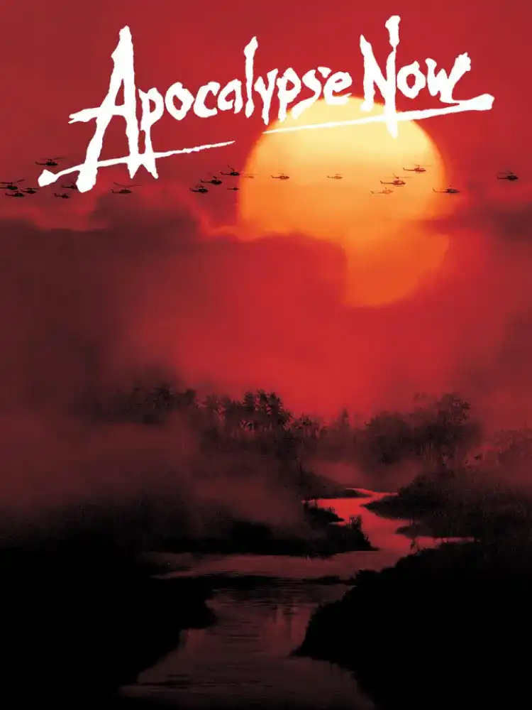
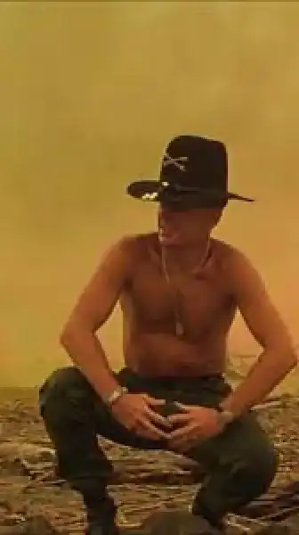
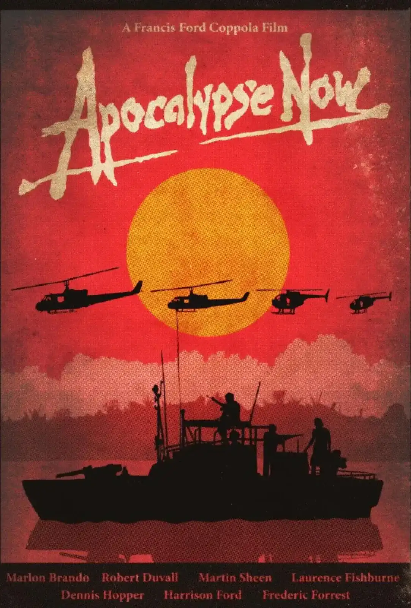
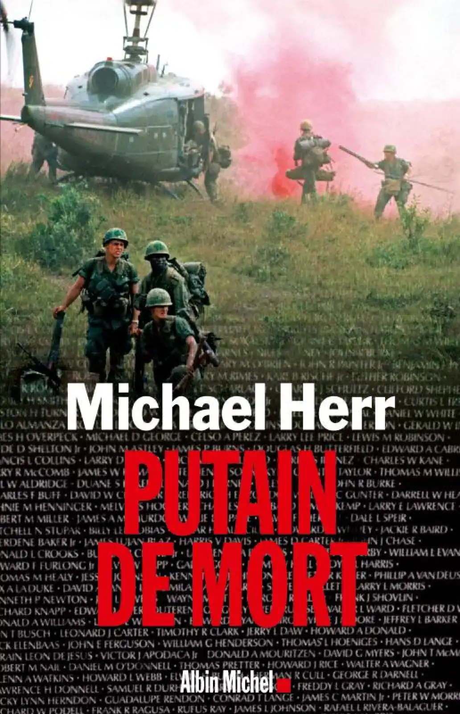
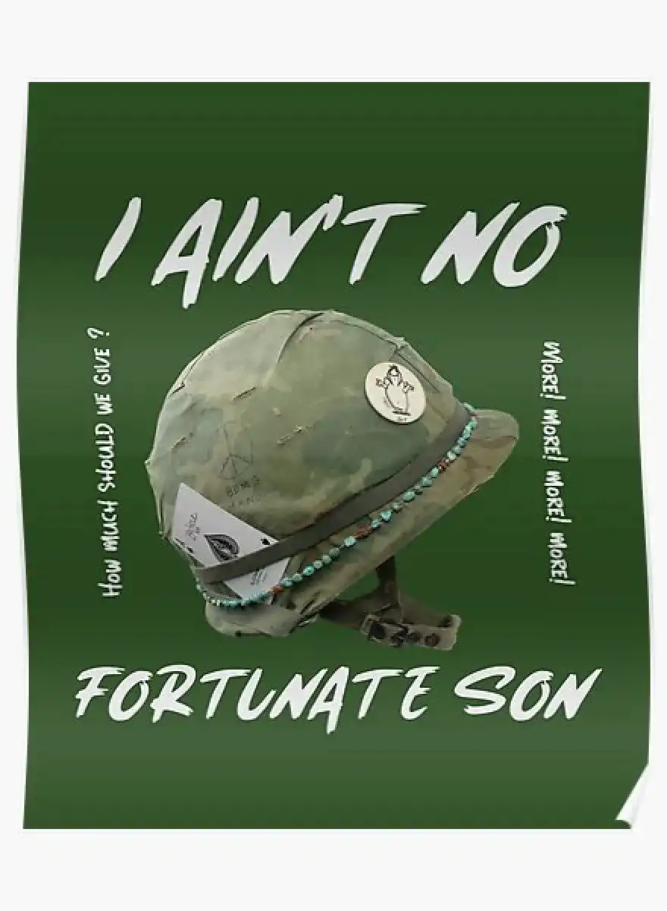

“J'aime l'odeur du napalm au petit matin”
Bienvenue sur Morpalm, où l'art explore la complexité de la guerre. Chaque œuvre offre une perspective unique sur les périodes tumultueuses, nous invitant à comprendre l'impact profond de la guerre sur notre histoire. Que vous soyez passionné d'histoire, amateur d'art ou simplement curieux, Morpalm vous convie à une aventure captivante à travers les époques marquées par les conflits. Rejoignez-nous, partagez vos réflexions et découvrez ces moments cruciaux qui ont façonné notre monde.
La réplique
L'Odeur du napalm : entre réplique célèbre et réalité de la guerre
 Voir L’articleApocalypse Now
Apocalypse Now : une odyssée cinématographique au cœur de l'horreur de la guerre
 Voir L’articlePutain de Mort
"Putain de Mort" de Michael Herr : un regard intime sur la Guerre du Vietnam
 Voir L’articleFortunate Son
"Fortunate Son" : l'hymne anti-guerre de John Fogerty
 Voir L’article